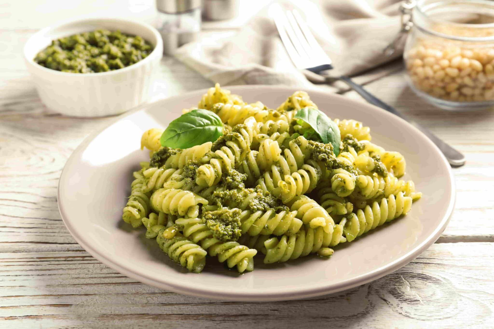

Homepage
Pasta al pesto

Description
Pasta al Pesto is a traditional dish from Ligurian cuisine, particularly from Genoa.
Its main sauce, pesto alla genovese, is a fresh, flavorful blend of basil, pine nuts, garlic, Parmigiano Reggiano, extra virgin olive oil, and salt.
Ingredients for 4 people
- 50g fresh basil (preferably Ligurian)
- 30 g pine nuts
- 1 clove of garlic
- 50 g grated Parmigiano Reggiano
- 20 g grated Pecorino cheese
- 100 ml extra virgin olive oil (preferably Ligurian)
- Coarse salt to taste
Steps
- Prepare the pesto
- Wash the basil leaves gently and pat them dry with a paper towel.
- In a mortar (traditional method) or a food processor, crush the garlic with a pinch of coarse salt.
- Add the pine nuts and grind until smoooth.
- Gradually add the basil leaves, grinding in a circular motion.
- Mix in the grated Parmigiano Reggiano and Pecorino cheese.
- Slowly pour in the olive oil, stirring until you get a creamy sauce.
- the pasta
- Bring a large pot of salted water to a boil.
- If using, peel and dice the potato and trim the green beans. Add both to the boiling water.
- Add the pasta and cook according to the package instructions.
- Combine Everything
- Drain the pasta (and vegetables, if used), reserving some pasta water.
- In a large bowl, mix the pasta with the pesto, adding a little pasta water if needed for a smoother consistency.
- Serve immediately, optionally garnished with extra cheese and a drizzle of olive oil.
Enjoy your pasta al pesto!